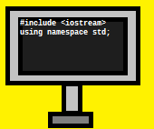

|
IMKAT Coders is a nonprofit team. This team has been founded by Ishan Kuber and Arin Torney. This organisation is developed for spreading the knowledge of coding, creating libraries for coding and developing various applications. This organisation takes tutorials on HTML, CSS, C++, Python etc. This organisation develops various libraries such as CSS frameworks. |
 |